库数量覆盖率广度
—
—
已完成目录命中库数 ÷ Top5万库数在同一份 Top5万分母中，把库数量与下载量权重放在一起。两个指标分别呈现，不合成分数，也不等同于项目端到端完成度。
能力地图以覆盖实际开发任务为目标，由前期讨论中的基础编程、前后端、Agent/TUI及办公自动化等需求逐步形成。后续V1场景体系参考ACM CCS的分层主题结构、SWEBOK的软件工程知识域和CNCF Landscape的技术领域，并用本地项目与GitHub开源项目样本校验。本页沿用Python库目录的21个功能主标签，不是V1的15个能力大类，也不是对任何正式标准的直接照搬或认证。
读取PyPI功能简述/描述、keywords以及classifiers中的Topic主题，辅以包名或指定前缀；数据通过PyPI JSON API、既有官方元数据缓存和ClickPy公开发布元数据镜像取得。重点包抽样复核映射优先用于修正部分规则结果，未逐库阅读全部源码，也未进行功能运行验收。
| 证据 | 评分方式 |
|---|---|
| 包名／指定前缀 | 命中加10分 |
| 功能简述 | 每项命中加6分，最多3项 |
| 关键词 | 每项命中加2分，最多2项 |
| Topic主题 | 有命中加4分 |
最高分确定一个主标签；同分按固定规则顺序处理。具有简述或Topic证据，且前两名分差不超过2分时，标记“多义待复核”；仅有包名/关键词信号时标记候选；无命中则进入“其他/待确认”。辅助标签只记录关联用途，不重复计数。规则状态不等于人工确认，元数据缺失及不确定条目仍保留在分母内。
数量覆盖率 = 同场景目录命中包数 ÷ 同场景全部样本包数。
下载量加权覆盖率 = 同场景目录命中包下载量之和 ÷ 同场景全部样本包下载量之和。
本页将后者作为场景支持度的下载量加权代理指标：数量覆盖率看库的覆盖广度，下载量加权覆盖率看按使用热度衡量的场景支撑程度。总体按总和计算，不平均场景百分比；各场景均使用各自的分子和分母。
本页使用2026-08-16—09-14 UTC的ClickPy镜像快照，尚未通过官方BigQuery独立复核，统计窗口跨越下载计数口径调整。下载量包含CI、自动化和间接依赖，覆盖所有平台与版本，不是鸿蒙实际下载量、独立用户数或项目数。下方趋势的横轴是排名分母大小，不是时间。
正在读取本地统计快照…
—
已完成目录命中库数 ÷ Top5万库数—
按下载热度衡量已完成库的总体支撑程度；分场景结果见下表沿用首页21个标签及Top5万唯一主标签；不是V1的135项细分场景。每个包只计入一行。
| 场景标签 | 已完成 / 全部库数 | 数量覆盖率 | 已完成 / 全部下载量 亿次 | 下载量覆盖率 | 未命中下载量 亿次 | 明细 |
|---|
未找到匹配的场景，请更换关键词。
“其他/待确认”保留在总量内。下载覆盖率较高可能由少数高下载量库贡献，不表示该场景的所有关键能力已具备。
未命中当前目录不等于客观不支持。优先核对条目遗漏、别名和版本，再决定适配。
| 包名 / 分类证据 | Top5万排名 | 下载量（次） |
|---|
| 包名 | 下载量（次） |
|---|
数量覆盖率：同场景已完成目录命中包数 / 同场景全部Top5万包数。
下载量覆盖率（场景支持度的加权代理指标）：同场景命中包的下载计数之和 / 同场景全部Top5万包的下载计数之和，用于衡量已完成库对该场景常用三方库的支撑程度。总覆盖率由总和计算，不取各场景百分比的算术平均；关键能力与实际任务可用性需另行验证。
已完成口径包括当前 Python 目录的“已适配”和“直接可用”记录；按PEP503归一化包名匹配。每种包仅计一次，不把不同版本当作不同库。
原始来源：ClickPy / ClickHouse · PyPI官方数据说明 · 2026-08-24计数规则调整
本页随仓库保存静态快照，不会联网更新。导出JSON包含原始整数、来源哈希和证据分布。
与上方Top5万使用同一快照、同一适配目录和同一场景标签；所有图中的5万节点对应上方统计。
累计 75.8526% → 75.4325%；净变化 -0.4202 个百分点；下降或持平。Top10万内：14,543 / 100,000 个库命中。
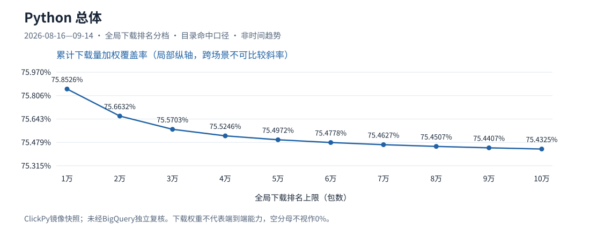
| 全局排名范围 | 场景命中/全部库 | 命中/全部下载计数 | 累计覆盖率 | 比上一档变化 | 新增区间本场景覆盖率 |
|---|---|---|---|---|---|
| Top1万 | 5,484 / 10,000 | 105,082,046,203 / 138,534,506,246 | 75.8526% | — | 75.8526% |
| Top2万 | 8,704 / 20,000 | 105,323,163,364 / 139,200,035,432 | 75.6632% | -0.1894 | 36.2294% |
| Top3万 | 9,998 / 30,000 | 105,353,000,302 / 139,410,560,278 | 75.5703% | -0.0929 | 14.1726% |
| Top4万 | 11,011 / 40,000 | 105,362,867,560 / 139,508,072,213 | 75.5246% | -0.0457 | 10.1190% |
| Top5万 | 12,082 / 50,000 | 105,369,147,867 / 139,567,021,774 | 75.4972% | -0.0274 | 10.6537% |
| Top6万 | 12,947 / 60,000 | 105,372,769,035 / 139,607,607,638 | 75.4778% | -0.0194 | 8.9222% |
| Top7万 | 13,486 / 70,000 | 105,374,396,551 / 139,637,717,473 | 75.4627% | -0.0151 | 5.4053% |
| Top8万 | 13,905 / 80,000 | 105,375,382,268 / 139,661,284,757 | 75.4507% | -0.0120 | 4.1826% |
| Top9万 | 14,210 / 90,000 | 105,375,968,571 / 139,680,459,353 | 75.4407% | -0.0099 | 3.0577% |
| Top10万 | 14,543 / 100,000 | 105,376,504,101 / 139,696,506,873 | 75.4325% | -0.0083 | 3.3372% |
原名称：业务与行业组件。金融、电商、医疗、教育等行业功能组件，以及该主类中证据尚待复核的候选；不能把整个类别视为已确认的行业能力。本页按本批元数据分类，不沿用首页“信息不足就暂归行业”的历史回退；无明确证据的包仍在“其他/待确认”。此次仅优化名称，类别ID、库归属和统计数值不变。
累计 68.7477% → 65.6942%；净变化 -3.0535 个百分点；下降或持平。Top10万内：223 / 2,015 个库命中。
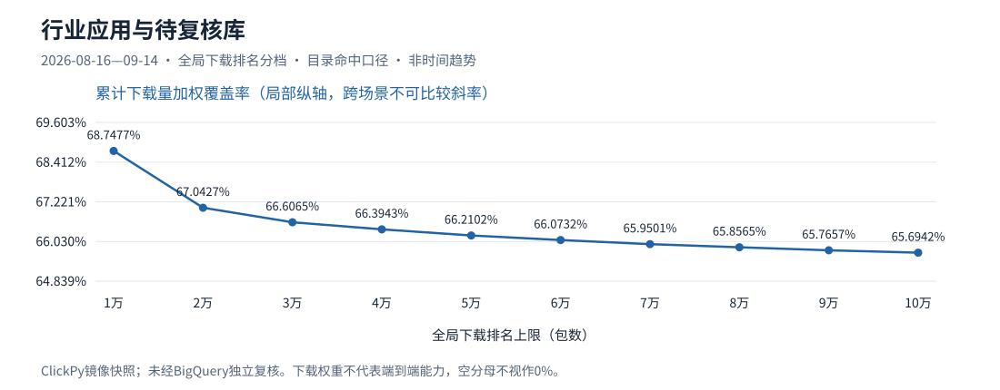
| 全局排名范围 | 场景命中/全部库 | 命中/全部下载计数 | 累计覆盖率 | 比上一档变化 | 新增区间本场景覆盖率 |
|---|---|---|---|---|---|
| Top1万 | 67 / 126 | 230,233,171 / 334,895,605 | 68.7477% | — | 68.7477% |
| Top2万 | 117 / 344 | 233,685,580 / 348,562,522 | 67.0427% | -1.7051 | 25.2611% |
| Top3万 | 147 / 498 | 234,411,499 / 351,934,698 | 66.6065% | -0.4361 | 21.5267% |
| Top4万 | 167 / 648 | 234,611,641 / 353,361,174 | 66.3943% | -0.2122 | 14.0305% |
| Top5万 | 179 / 832 | 234,684,501 / 354,453,757 | 66.2102% | -0.1841 | 6.6686% |
| Top6万 | 200 / 1,044 | 234,771,855 / 355,321,048 | 66.0732% | -0.1370 | 10.0721% |
| Top7万 | 212 / 1,284 | 234,807,519 / 356,038,282 | 65.9501% | -0.1231 | 4.9724% |
| Top8万 | 217 / 1,506 | 234,819,163 / 356,561,619 | 65.8565% | -0.0935 | 2.2250% |
| Top9万 | 220 / 1,768 | 234,824,644 / 357,062,434 | 65.7657% | -0.0908 | 1.0944% |
| Top10万 | 223 / 2,015 | 234,829,380 / 357,458,181 | 65.6942% | -0.0715 | 1.1967% |
累计 57.3089% → 57.1720%；净变化 -0.1368 个百分点；下降或持平。Top10万内：371 / 2,590 个库命中。
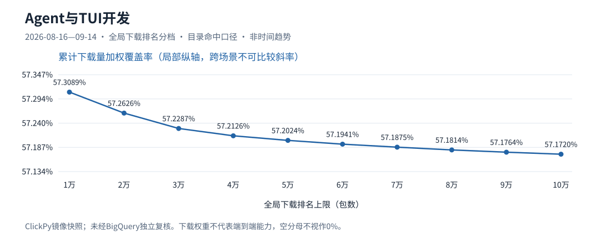
| 全局排名范围 | 场景命中/全部库 | 命中/全部下载计数 | 累计覆盖率 | 比上一档变化 | 新增区间本场景覆盖率 |
|---|---|---|---|---|---|
| Top1万 | 140 / 281 | 3,432,338,165 / 5,989,193,705 | 57.3089% | — | 57.3089% |
| Top2万 | 204 / 487 | 3,437,182,822 / 6,002,491,910 | 57.2626% | -0.0463 | 36.4309% |
| Top3万 | 224 / 693 | 3,437,605,370 / 6,006,786,688 | 57.2287% | -0.0339 | 9.8386% |
| Top4万 | 254 / 920 | 3,437,898,394 / 6,008,990,994 | 57.2126% | -0.0161 | 13.2933% |
| Top5万 | 281 / 1,149 | 3,438,053,625 / 6,010,328,104 | 57.2024% | -0.0101 | 11.6094% |
| Top6万 | 307 / 1,412 | 3,438,161,608 / 6,011,390,890 | 57.1941% | -0.0083 | 10.1604% |
| Top7万 | 335 / 1,691 | 3,438,246,361 / 6,012,232,921 | 57.1875% | -0.0066 | 10.0653% |
| Top8万 | 344 / 1,980 | 3,438,268,052 / 6,012,911,190 | 57.1814% | -0.0061 | 3.1980% |
| Top9万 | 356 / 2,274 | 3,438,291,454 / 6,013,475,801 | 57.1764% | -0.0050 | 4.1448% |
| Top10万 | 371 / 2,590 | 3,438,316,315 / 6,013,984,410 | 57.1720% | -0.0044 | 4.8880% |
原名称：开发基础库。配置、解析、序列化、数据校验、日期、缓存、字符串、数据结构等跨应用工具；不包含已单列的构建、测试、Web框架与数据库驱动，语言标准库本身不计入三方包。
累计 88.7466% → 88.6678%；净变化 -0.0788 个百分点；下降或持平。Top10万内：1,128 / 4,101 个库命中。
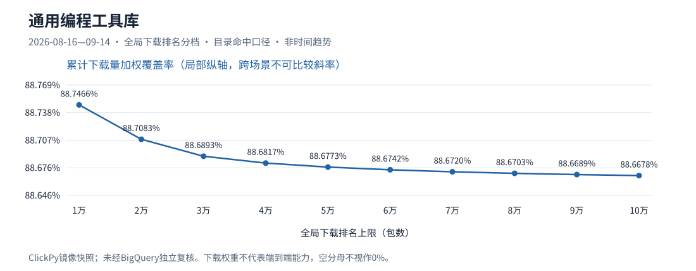
| 全局排名范围 | 场景命中/全部库 | 命中/全部下载计数 | 累计覆盖率 | 比上一档变化 | 新增区间本场景覆盖率 |
|---|---|---|---|---|---|
| Top1万 | 591 / 778 | 31,745,311,405 / 35,770,730,012 | 88.7466% | — | 88.7466% |
| Top2万 | 785 / 1,253 | 31,760,583,879 / 35,803,413,722 | 88.7083% | -0.0384 | 46.7281% |
| Top3万 | 881 / 1,739 | 31,762,690,776 / 35,813,432,216 | 88.6893% | -0.0189 | 21.0301% |
| Top4万 | 928 / 2,106 | 31,763,126,897 / 35,816,998,149 | 88.6817% | -0.0076 | 12.2302% |
| Top5万 | 988 / 2,478 | 31,763,473,349 / 35,819,186,066 | 88.6773% | -0.0044 | 15.8348% |
| Top6万 | 1,035 / 2,833 | 31,763,669,474 / 35,820,629,032 | 88.6742% | -0.0030 | 13.5918% |
| Top7万 | 1,066 / 3,165 | 31,763,764,961 / 35,821,635,612 | 88.6720% | -0.0022 | 9.4863% |
| Top8万 | 1,094 / 3,493 | 31,763,830,131 / 35,822,409,710 | 88.6703% | -0.0017 | 8.4188% |
| Top9万 | 1,114 / 3,806 | 31,763,868,326 / 35,823,009,631 | 88.6689% | -0.0014 | 6.3667% |
| Top10万 | 1,128 / 4,101 | 31,763,890,734 / 35,823,484,105 | 88.6678% | -0.0011 | 4.7227% |
累计 47.7580% → 47.6305%；净变化 -0.1275 个百分点；下降或持平。Top10万内：421 / 2,986 个库命中。
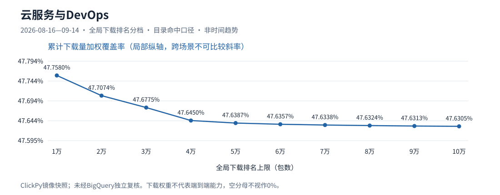
| 全局排名范围 | 场景命中/全部库 | 命中/全部下载计数 | 累计覆盖率 | 比上一档变化 | 新增区间本场景覆盖率 |
|---|---|---|---|---|---|
| Top1万 | 209 / 507 | 4,904,611,746 / 10,269,719,869 | 47.7580% | — | 47.7580% |
| Top2万 | 286 / 823 | 4,910,807,478 / 10,293,598,434 | 47.7074% | -0.0506 | 25.9468% |
| Top3万 | 306 / 1,195 | 4,911,216,576 / 10,300,902,597 | 47.6775% | -0.0299 | 5.6009% |
| Top4万 | 329 / 1,905 | 4,911,433,725 / 10,308,385,736 | 47.6450% | -0.0325 | 2.9018% |
| Top5万 | 348 / 2,176 | 4,911,545,926 / 10,309,994,071 | 47.6387% | -0.0063 | 6.9762% |
| Top6万 | 368 / 2,378 | 4,911,628,985 / 10,310,820,024 | 47.6357% | -0.0030 | 10.0561% |
| Top7万 | 379 / 2,539 | 4,911,662,447 / 10,311,302,935 | 47.6338% | -0.0019 | 6.9292% |
| Top8万 | 389 / 2,686 | 4,911,686,128 / 10,311,651,019 | 47.6324% | -0.0014 | 6.8032% |
| Top9万 | 401 / 2,838 | 4,911,709,118 / 10,311,943,776 | 47.6313% | -0.0011 | 7.8529% |
| Top10万 | 421 / 2,986 | 4,911,741,287 / 10,312,182,931 | 47.6305% | -0.0008 | 13.4511% |
累计 64.8731% → 64.8074%；净变化 -0.0657 个百分点；有升有降。Top10万内：1,807 / 4,382 个库命中。
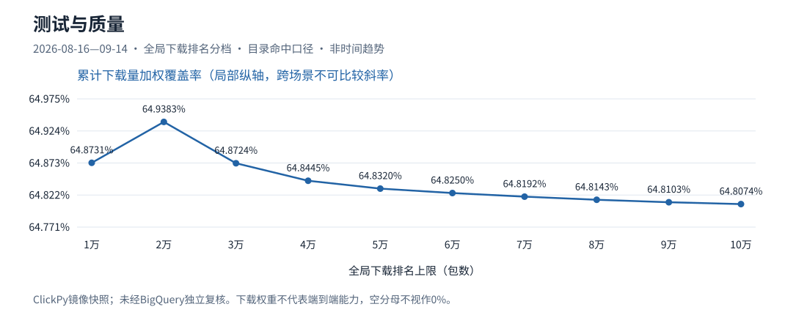
| 全局排名范围 | 场景命中/全部库 | 命中/全部下载计数 | 累计覆盖率 | 比上一档变化 | 新增区间本场景覆盖率 |
|---|---|---|---|---|---|
| Top1万 | 642 / 861 | 4,138,752,460 / 6,379,766,000 | 64.8731% | — | 64.8731% |
| Top2万 | 1,201 / 1,676 | 4,181,149,059 / 6,438,652,911 | 64.9383% | +0.0652 | 71.9966% |
| Top3万 | 1,445 / 2,370 | 4,188,339,565 / 6,456,273,456 | 64.8724% | -0.0659 | 40.8075% |
| Top4万 | 1,498 / 2,737 | 4,188,857,933 / 6,459,848,041 | 64.8445% | -0.0279 | 14.5015% |
| Top5万 | 1,649 / 3,172 | 4,189,669,088 / 6,462,346,239 | 64.8320% | -0.0125 | 32.4696% |
| Top6万 | 1,786 / 3,561 | 4,190,304,185 / 6,464,028,017 | 64.8250% | -0.0070 | 37.7634% |
| Top7万 | 1,791 / 3,760 | 4,190,318,131 / 6,464,623,465 | 64.8192% | -0.0058 | 2.3421% |
| Top8万 | 1,799 / 3,983 | 4,190,336,956 / 6,465,147,412 | 64.8143% | -0.0050 | 3.5929% |
| Top9万 | 1,804 / 4,195 | 4,190,346,180 / 6,465,554,870 | 64.8103% | -0.0039 | 2.2638% |
| Top10万 | 1,807 / 4,382 | 4,190,351,067 / 6,465,855,076 | 64.8074% | -0.0029 | 1.6279% |
累计 54.2386% → 53.6335%；净变化 -0.6051 个百分点；下降或持平。Top10万内：292 / 3,934 个库命中。
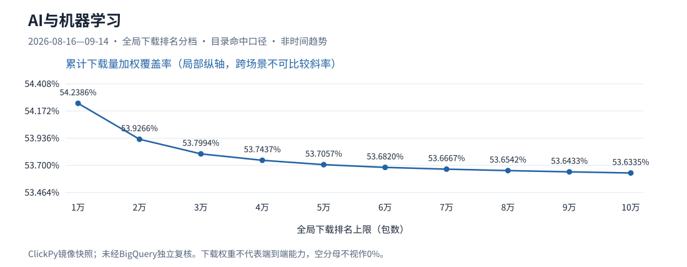
| 全局排名范围 | 场景命中/全部库 | 命中/全部下载计数 | 累计覆盖率 | 比上一档变化 | 新增区间本场景覆盖率 |
|---|---|---|---|---|---|
| Top1万 | 100 / 444 | 1,766,716,245 / 3,257,304,866 | 54.2386% | — | 54.2386% |
| Top2万 | 149 / 816 | 1,770,222,829 / 3,282,649,654 | 53.9266% | -0.3119 | 13.8355% |
| Top3万 | 168 / 1,227 | 1,770,656,843 / 3,291,219,273 | 53.7994% | -0.1272 | 5.0646% |
| Top4万 | 196 / 1,630 | 1,770,944,835 / 3,295,169,045 | 53.7437% | -0.0557 | 7.2914% |
| Top5万 | 216 / 2,062 | 1,771,066,597 / 3,297,724,712 | 53.7057% | -0.0380 | 4.7644% |
| Top6万 | 244 / 2,475 | 1,771,181,826 / 3,299,393,663 | 53.6820% | -0.0237 | 6.9043% |
| Top7万 | 258 / 2,815 | 1,771,224,444 / 3,300,414,468 | 53.6667% | -0.0153 | 4.1749% |
| Top8万 | 271 / 3,165 | 1,771,254,980 / 3,301,241,382 | 53.6542% | -0.0125 | 3.6928% |
| Top9万 | 278 / 3,528 | 1,771,268,427 / 3,301,936,906 | 53.6433% | -0.0109 | 1.9334% |
| Top10万 | 292 / 3,934 | 1,771,290,730 / 3,302,585,602 | 53.6335% | -0.0099 | 3.4381% |
累计 90.3077% → 90.1991%；净变化 -0.1086 个百分点；下降或持平。Top10万内：404 / 2,067 个库命中。
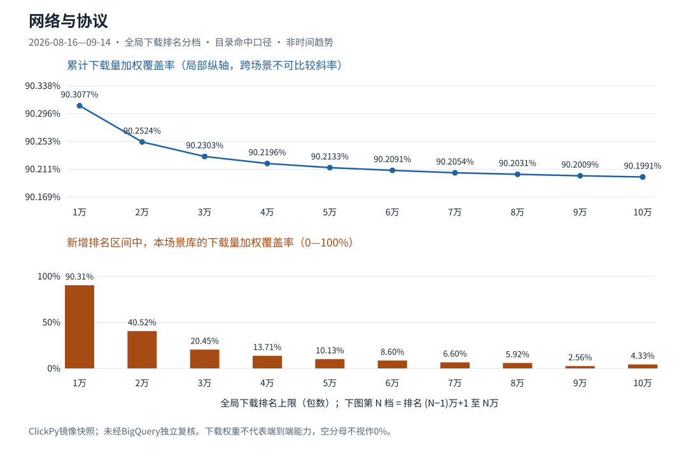
| 全局排名范围 | 场景命中/全部库 | 命中/全部下载计数 | 累计覆盖率 | 比上一档变化 | 新增区间本场景覆盖率 |
|---|---|---|---|---|---|
| Top1万 | 188 / 323 | 12,624,491,095 / 13,979,418,815 | 90.3077% | — | 90.3077% |
| Top2万 | 268 / 553 | 12,630,785,160 / 13,994,950,222 | 90.2524% | -0.0552 | 40.5248% |
| Top3万 | 308 / 766 | 12,631,695,606 / 13,999,401,248 | 90.2303% | -0.0222 | 20.4547% |
| Top4万 | 334 / 966 | 12,631,963,400 / 14,001,354,554 | 90.2196% | -0.0107 | 13.7098% |
| Top5万 | 353 / 1,151 | 12,632,075,050 / 14,002,456,494 | 90.2133% | -0.0063 | 10.1321% |
| Top6万 | 368 / 1,327 | 12,632,136,001 / 14,003,165,177 | 90.2091% | -0.0041 | 8.6006% |
| Top7万 | 381 / 1,532 | 12,632,176,891 / 14,003,785,143 | 90.2054% | -0.0037 | 6.5955% |
| Top8万 | 391 / 1,694 | 12,632,199,537 / 14,004,167,478 | 90.2031% | -0.0023 | 5.9231% |
| Top9万 | 396 / 1,884 | 12,632,208,845 / 14,004,531,306 | 90.2009% | -0.0023 | 2.5584% |
| Top10万 | 404 / 2,067 | 12,632,221,521 / 14,004,823,768 | 90.1991% | -0.0018 | 4.3342% |
累计 52.5556% → 52.0228%；净变化 -0.5328 个百分点；下降或持平。Top10万内：759 / 5,550 个库命中。
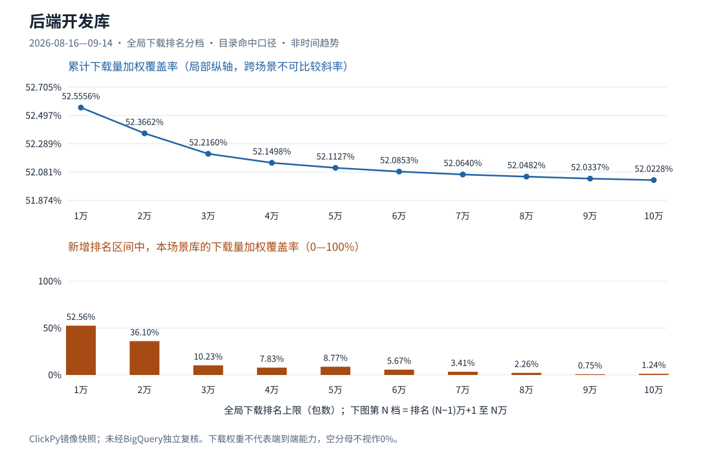
| 全局排名范围 | 场景命中/全部库 | 命中/全部下载计数 | 累计覆盖率 | 比上一档变化 | 新增区间本场景覆盖率 |
|---|---|---|---|---|---|
| Top1万 | 339 / 592 | 1,891,467,578 / 3,598,985,979 | 52.5556% | — | 52.5556% |
| Top2万 | 539 / 1,242 | 1,906,594,639 / 3,640,885,156 | 52.3662% | -0.1893 | 36.1035% |
| Top3万 | 600 / 1,868 | 1,907,926,415 / 3,653,909,591 | 52.2160% | -0.1502 | 10.2252% |
| Top4万 | 644 / 2,423 | 1,908,353,677 / 3,659,368,769 | 52.1498% | -0.0662 | 7.8265% |
| Top5万 | 691 / 2,956 | 1,908,628,069 / 3,662,498,055 | 52.1127% | -0.0371 | 8.7685% |
| Top6万 | 720 / 3,490 | 1,908,750,610 / 3,664,660,330 | 52.0853% | -0.0274 | 5.6672% |
| Top7万 | 738 / 4,024 | 1,908,805,517 / 3,666,270,969 | 52.0640% | -0.0214 | 3.4090% |
| Top8万 | 749 / 4,516 | 1,908,831,635 / 3,667,428,203 | 52.0482% | -0.0157 | 2.2569% |
| Top9万 | 753 / 5,058 | 1,908,839,427 / 3,668,469,726 | 52.0337% | -0.0146 | 0.7481% |
| Top10万 | 759 / 5,550 | 1,908,849,216 / 3,669,256,850 | 52.0228% | -0.0109 | 1.2436% |
累计 65.0723% → 64.7274%；净变化 -0.3449 个百分点；下降或持平。Top10万内：186 / 1,536 个库命中。
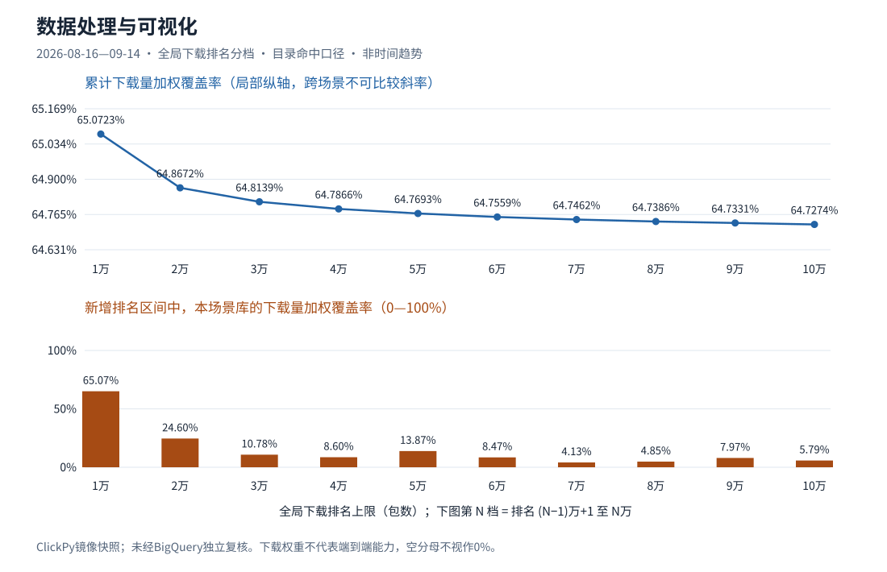
| 全局排名范围 | 场景命中/全部库 | 命中/全部下载计数 | 累计覆盖率 | 比上一档变化 | 新增区间本场景覆盖率 |
|---|---|---|---|---|---|
| Top1万 | 53 / 219 | 1,692,379,575 / 2,600,766,590 | 65.0723% | — | 65.0723% |
| Top2万 | 94 / 404 | 1,695,639,516 / 2,614,017,071 | 64.8672% | -0.2051 | 24.6024% |
| Top3万 | 107 / 527 | 1,695,917,570 / 2,616,596,542 | 64.8139% | -0.0533 | 10.7795% |
| Top4万 | 118 / 659 | 1,696,026,721 / 2,617,865,064 | 64.7866% | -0.0272 | 8.6046% |
| Top5万 | 140 / 812 | 1,696,150,614 / 2,618,758,351 | 64.7693% | -0.0174 | 13.8693% |
| Top6万 | 153 / 967 | 1,696,203,368 / 2,619,381,383 | 64.7559% | -0.0134 | 8.4673% |
| Top7万 | 159 / 1,106 | 1,696,220,676 / 2,619,800,615 | 64.7462% | -0.0097 | 4.1285% |
| Top8万 | 166 / 1,246 | 1,696,236,661 / 2,620,130,025 | 64.7386% | -0.0075 | 4.8526% |
| Top9万 | 177 / 1,381 | 1,696,257,247 / 2,620,388,257 | 64.7331% | -0.0056 | 7.9719% |
| Top10万 | 186 / 1,536 | 1,696,271,688 / 2,620,637,817 | 64.7274% | -0.0056 | 5.7866% |
累计 76.7060% → 76.2724%；净变化 -0.4336 个百分点；下降或持平。Top10万内：310 / 2,297 个库命中。
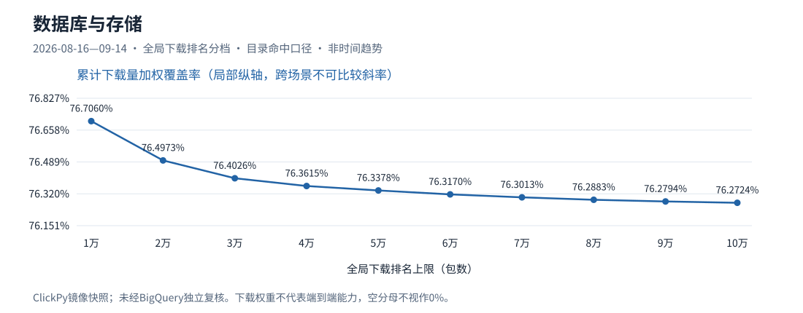
| 全局排名范围 | 场景命中/全部库 | 命中/全部下载计数 | 累计覆盖率 | 比上一档变化 | 新增区间本场景覆盖率 |
|---|---|---|---|---|---|
| Top1万 | 154 / 299 | 2,540,347,830 / 3,311,799,066 | 76.7060% | — | 76.7060% |
| Top2万 | 219 / 529 | 2,545,264,079 / 3,327,259,612 | 76.4973% | -0.2087 | 31.7987% |
| Top3万 | 241 / 756 | 2,545,772,624 / 3,332,050,395 | 76.4026% | -0.0947 | 10.6151% |
| Top4万 | 258 / 967 | 2,545,951,298 / 3,334,078,478 | 76.3615% | -0.0411 | 8.8100% |
| Top5万 | 268 / 1,153 | 2,546,011,114 / 3,335,190,099 | 76.3378% | -0.0237 | 5.3810% |
| Top6万 | 282 / 1,396 | 2,546,068,587 / 3,336,174,237 | 76.3170% | -0.0208 | 5.8399% |
| Top7万 | 289 / 1,631 | 2,546,090,106 / 3,336,887,645 | 76.3013% | -0.0157 | 3.0164% |
| Top8万 | 297 / 1,884 | 2,546,109,068 / 3,337,482,294 | 76.2883% | -0.0130 | 3.1888% |
| Top9万 | 303 / 2,096 | 2,546,120,685 / 3,337,887,763 | 76.2794% | -0.0089 | 2.8651% |
| Top10万 | 310 / 2,297 | 2,546,131,932 / 3,338,210,417 | 76.2724% | -0.0070 | 3.4858% |
累计 80.7115% → 80.5802%；净变化 -0.1313 个百分点；下降或持平。Top10万内：267 / 1,118 个库命中。
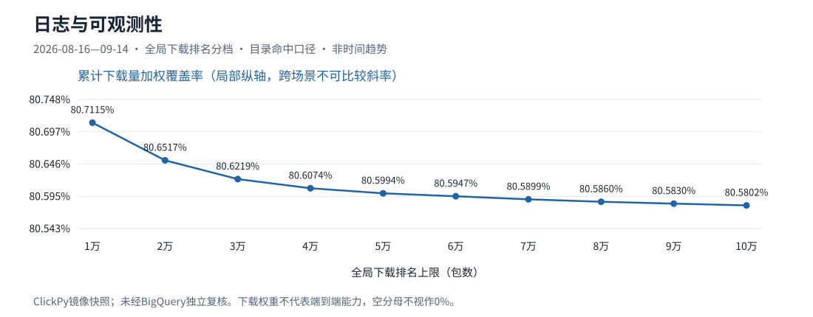
| 全局排名范围 | 场景命中/全部库 | 命中/全部下载计数 | 累计覆盖率 | 比上一档变化 | 新增区间本场景覆盖率 |
|---|---|---|---|---|---|
| Top1万 | 162 / 257 | 3,661,149,924 / 4,536,094,033 | 80.7115% | — | 80.7115% |
| Top2万 | 200 / 358 | 3,664,237,670 / 4,543,284,216 | 80.6517% | -0.0598 | 42.9439% |
| Top3万 | 219 / 463 | 3,664,618,670 / 4,545,435,742 | 80.6219% | -0.0298 | 17.7084% |
| Top4万 | 231 / 559 | 3,664,727,445 / 4,546,389,001 | 80.6074% | -0.0145 | 11.4109% |
| Top5万 | 247 / 657 | 3,664,820,437 / 4,546,958,316 | 80.5994% | -0.0080 | 16.3340% |
| Top6万 | 253 / 730 | 3,664,845,858 / 4,547,252,515 | 80.5947% | -0.0047 | 8.6407% |
| Top7万 | 259 / 830 | 3,664,864,689 / 4,547,550,535 | 80.5899% | -0.0049 | 6.3187% |
| Top8万 | 265 / 930 | 3,664,878,495 / 4,547,784,659 | 80.5860% | -0.0038 | 5.8969% |
| Top9万 | 265 / 1,018 | 3,664,878,495 / 4,547,953,708 | 80.5830% | -0.0030 | 0.0000% |
| Top10万 | 267 / 1,118 | 3,664,881,852 / 4,548,114,310 | 80.5802% | -0.0028 | 2.0903% |
累计 73.6272% → 72.1520%；净变化 -1.4752 个百分点；下降或持平。Top10万内：6,682 / 55,653 个库命中。
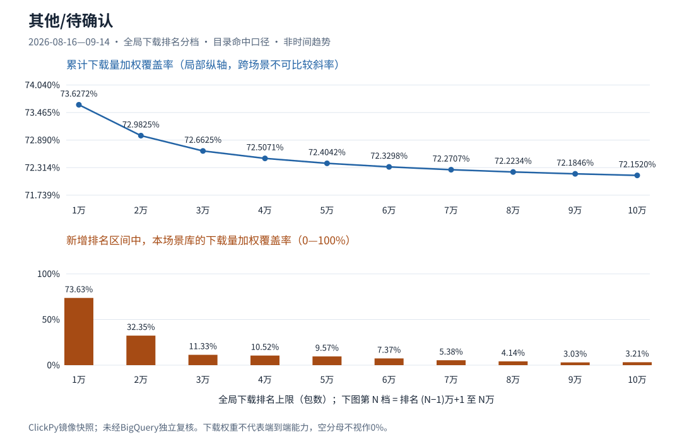
| 全局排名范围 | 场景命中/全部库 | 命中/全部下载计数 | 累计覆盖率 | 比上一档变化 | 新增区间本场景覆盖率 |
|---|---|---|---|---|---|
| Top1万 | 2,204 / 4,122 | 14,890,073,177 / 20,223,607,767 | 73.6272% | — | 73.6272% |
| Top2万 | 3,616 / 9,083 | 14,993,862,030 / 20,544,456,349 | 72.9825% | -0.6447 | 32.3482% |
| Top3万 | 4,188 / 14,253 | 15,006,008,008 / 20,651,665,862 | 72.6625% | -0.3201 | 11.3292% |
| Top4万 | 4,750 / 19,609 | 15,011,454,345 / 20,703,418,794 | 72.5071% | -0.1553 | 10.5237% |
| Top5万 | 5,291 / 25,358 | 15,014,699,434 / 20,737,340,130 | 72.4042% | -0.1030 | 9.5665% |
| Top6万 | 5,720 / 31,226 | 15,016,450,681 / 20,761,090,319 | 72.3298% | -0.0744 | 7.3736% |
| Top7万 | 6,048 / 37,321 | 15,017,437,585 / 20,779,436,587 | 72.2707% | -0.0591 | 5.3793% |
| Top8万 | 6,302 / 43,448 | 15,018,036,087 / 20,793,877,329 | 72.2234% | -0.0473 | 4.1445% |
| Top9万 | 6,485 / 49,518 | 15,018,388,401 / 20,805,518,079 | 72.1846% | -0.0387 | 3.0266% |
| Top10万 | 6,682 / 55,653 | 15,018,704,026 / 20,815,362,489 | 72.1520% | -0.0326 | 3.2061% |
累计 51.1694% → 50.5978%；净变化 -0.5715 个百分点；下降或持平。Top10万内：114 / 754 个库命中。
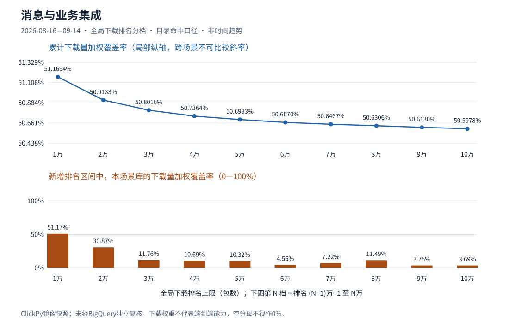
| 全局排名范围 | 场景命中/全部库 | 命中/全部下载计数 | 累计覆盖率 | 比上一档变化 | 新增区间本场景覆盖率 |
|---|---|---|---|---|---|
| Top1万 | 43 / 79 | 215,327,668 / 420,813,749 | 51.1694% | — | 51.1694% |
| Top2万 | 67 / 164 | 216,986,922 / 426,188,844 | 50.9133% | -0.2560 | 30.8693% |
| Top3万 | 74 / 225 | 217,130,310 / 427,408,474 | 50.8016% | -0.1117 | 11.7567% |
| Top4万 | 83 / 300 | 217,204,702 / 428,104,456 | 50.7364% | -0.0652 | 10.6888% |
| Top5万 | 91 / 369 | 217,246,418 / 428,508,510 | 50.6983% | -0.0381 | 10.3244% |
| Top6万 | 94 / 442 | 217,259,664 / 428,798,837 | 50.6670% | -0.0312 | 4.5624% |
| Top7万 | 99 / 509 | 217,274,180 / 428,999,768 | 50.6467% | -0.0203 | 7.2244% |
| Top8万 | 108 / 584 | 217,294,491 / 429,176,512 | 50.6306% | -0.0161 | 11.4918% |
| Top9万 | 111 / 668 | 217,300,545 / 429,337,834 | 50.6130% | -0.0176 | 3.7527% |
| Top10万 | 114 / 754 | 217,305,652 / 429,476,351 | 50.5978% | -0.0151 | 3.6869% |
累计 90.0982% → 89.9461%；净变化 -0.1521 个百分点；下降或持平。Top10万内：265 / 1,421 个库命中。
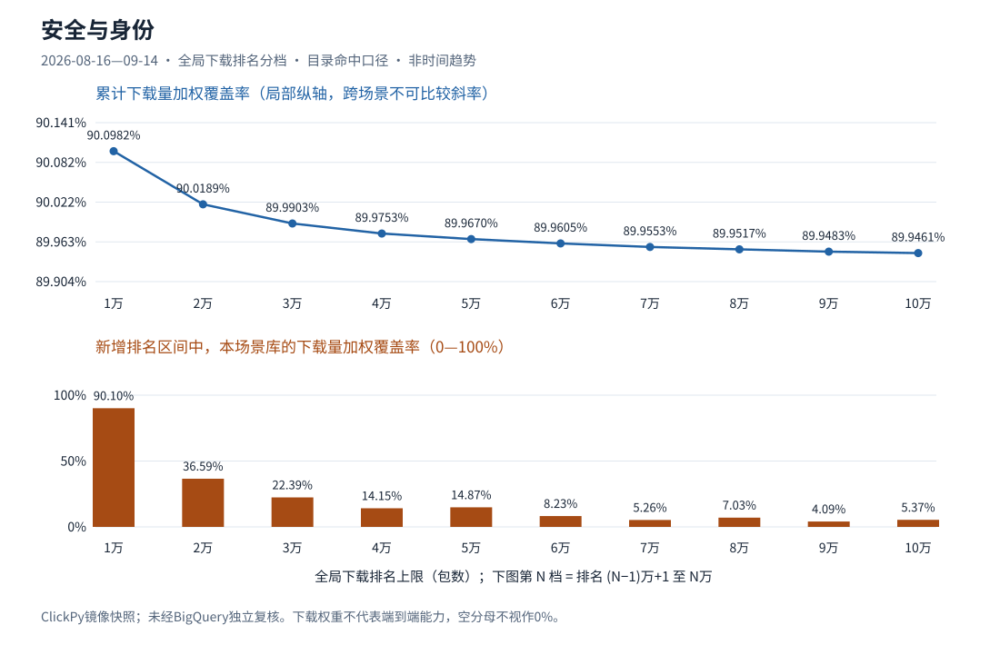
| 全局排名范围 | 场景命中/全部库 | 命中/全部下载计数 | 累计覆盖率 | 比上一档变化 | 新增区间本场景覆盖率 |
|---|---|---|---|---|---|
| Top1万 | 106 / 194 | 6,242,987,372 / 6,929,089,625 | 90.0982% | — | 90.0982% |
| Top2万 | 156 / 349 | 6,246,750,400 / 6,939,375,228 | 90.0189% | -0.0793 | 36.5854% |
| Top3万 | 188 / 490 | 6,247,408,035 / 6,942,311,986 | 89.9903% | -0.0286 | 22.3932% |
| Top4万 | 207 / 631 | 6,247,602,492 / 6,943,685,997 | 89.9753% | -0.0150 | 14.1525% |
| Top5万 | 225 / 758 | 6,247,716,419 / 6,944,451,995 | 89.9670% | -0.0083 | 14.8730% |
| Top6万 | 236 / 894 | 6,247,761,693 / 6,945,001,836 | 89.9605% | -0.0065 | 8.2340% |
| Top7万 | 244 / 1,038 | 6,247,784,486 / 6,945,435,497 | 89.9553% | -0.0053 | 5.2559% |
| Top8万 | 253 / 1,165 | 6,247,805,301 / 6,945,731,750 | 89.9517% | -0.0035 | 7.0261% |
| Top9万 | 259 / 1,311 | 6,247,816,698 / 6,946,010,364 | 89.9483% | -0.0034 | 4.0906% |
| Top10万 | 265 / 1,421 | 6,247,826,199 / 6,946,187,177 | 89.9461% | -0.0022 | 5.3735% |
累计 69.5316% → 69.4121%；净变化 -0.1195 个百分点；下降或持平。Top10万内：249 / 1,611 个库命中。
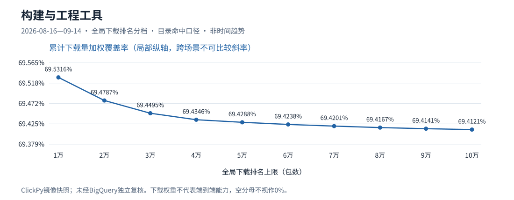
| 全局排名范围 | 场景命中/全部库 | 命中/全部下载计数 | 累计覆盖率 | 比上一档变化 | 新增区间本场景覆盖率 |
|---|---|---|---|---|---|
| Top1万 | 113 / 184 | 5,247,790,564 / 7,547,346,677 | 69.5316% | — | 69.5316% |
| Top2万 | 171 / 360 | 5,252,842,928 / 7,560,364,141 | 69.4787% | -0.0529 | 38.8122% |
| Top3万 | 188 / 540 | 5,253,208,802 / 7,564,071,019 | 69.4495% | -0.0292 | 9.8701% |
| Top4万 | 206 / 732 | 5,253,394,054 / 7,565,956,401 | 69.4346% | -0.0149 | 9.8257% |
| Top5万 | 226 / 871 | 5,253,513,175 / 7,566,769,060 | 69.4288% | -0.0059 | 14.6582% |
| Top6万 | 233 / 1,014 | 5,253,541,449 / 7,567,345,384 | 69.4238% | -0.0049 | 4.9059% |
| Top7万 | 239 / 1,159 | 5,253,560,187 / 7,567,784,371 | 69.4201% | -0.0038 | 4.2685% |
| Top8万 | 245 / 1,323 | 5,253,573,980 / 7,568,174,651 | 69.4167% | -0.0034 | 3.5341% |
| Top9万 | 248 / 1,473 | 5,253,579,666 / 7,568,461,673 | 69.4141% | -0.0026 | 1.9810% |
| Top10万 | 249 / 1,611 | 5,253,581,248 / 7,568,683,229 | 69.4121% | -0.0020 | 0.7140% |
累计 67.5507% → 67.4580%；净变化 -0.0927 个百分点；下降或持平。Top10万内：145 / 1,072 个库命中。
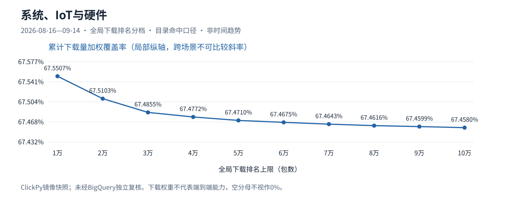
| 全局排名范围 | 场景命中/全部库 | 命中/全部下载计数 | 累计覆盖率 | 比上一档变化 | 新增区间本场景覆盖率 |
|---|---|---|---|---|---|
| Top1万 | 55 / 112 | 4,217,837,899 / 6,243,957,044 | 67.5507% | — | 67.5507% |
| Top2万 | 91 / 231 | 4,220,469,647 / 6,251,597,713 | 67.5103% | -0.0405 | 34.4439% |
| Top3万 | 102 / 356 | 4,220,691,782 / 6,254,222,024 | 67.4855% | -0.0248 | 8.4645% |
| Top4万 | 112 / 449 | 4,220,776,413 / 6,255,111,812 | 67.4772% | -0.0082 | 9.5114% |
| Top5万 | 121 / 559 | 4,220,830,465 / 6,255,768,081 | 67.4710% | -0.0062 | 8.2363% |
| Top6万 | 128 / 649 | 4,220,859,444 / 6,256,133,636 | 67.4675% | -0.0035 | 7.9274% |
| Top7万 | 134 / 758 | 4,220,877,581 / 6,256,459,726 | 67.4643% | -0.0032 | 5.5620% |
| Top8万 | 140 / 872 | 4,220,891,766 / 6,256,729,935 | 67.4616% | -0.0027 | 5.2496% |
| Top9万 | 141 / 956 | 4,220,893,551 / 6,256,890,786 | 67.4599% | -0.0017 | 1.1097% |
| Top10万 | 145 / 1,072 | 4,220,900,030 / 6,257,076,482 | 67.4580% | -0.0019 | 3.4890% |
累计 77.5062% → 77.1873%；净变化 -0.3189 个百分点；下降或持平。Top10万内：98 / 781 个库命中。
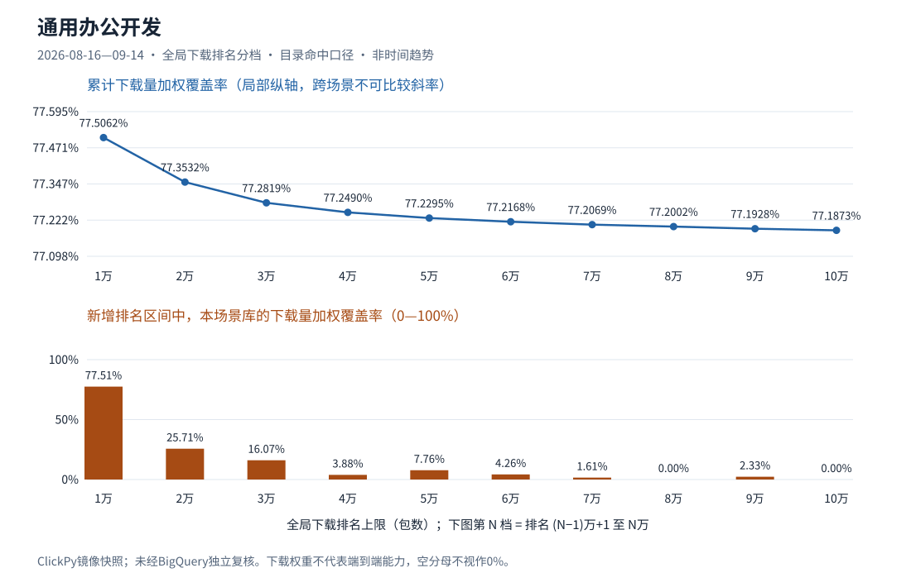
| 全局排名范围 | 场景命中/全部库 | 命中/全部下载计数 | 累计覆盖率 | 比上一档变化 | 新增区间本场景覆盖率 |
|---|---|---|---|---|---|
| Top1万 | 53 / 119 | 1,248,215,085 / 1,610,471,147 | 77.5062% | — | 77.5062% |
| Top2万 | 71 / 191 | 1,249,441,461 / 1,615,241,296 | 77.3532% | -0.1530 | 25.7094% |
| Top3万 | 83 / 277 | 1,249,743,988 / 1,617,124,255 | 77.2819% | -0.0714 | 16.0666% |
| Top4万 | 86 / 351 | 1,249,772,127 / 1,617,848,812 | 77.2490% | -0.0329 | 3.8836% |
| Top5万 | 92 / 428 | 1,249,807,420 / 1,618,303,750 | 77.2295% | -0.0195 | 7.7578% |
| Top6万 | 95 / 497 | 1,249,819,395 / 1,618,584,684 | 77.2168% | -0.0127 | 4.2626% |
| Top7万 | 96 / 567 | 1,249,822,813 / 1,618,797,089 | 77.2069% | -0.0099 | 1.6092% |
| Top8万 | 96 / 627 | 1,249,822,813 / 1,618,938,058 | 77.2002% | -0.0067 | 0.0000% |
| Top9万 | 98 / 709 | 1,249,826,501 / 1,619,096,465 | 77.1928% | -0.0073 | 2.3282% |
| Top10万 | 98 / 781 | 1,249,826,501 / 1,619,212,626 | 77.1873% | -0.0055 | 0.0000% |
累计 94.1306% → 93.8890%；净变化 -0.2416 个百分点；下降或持平。Top10万内：38 / 261 个库命中。
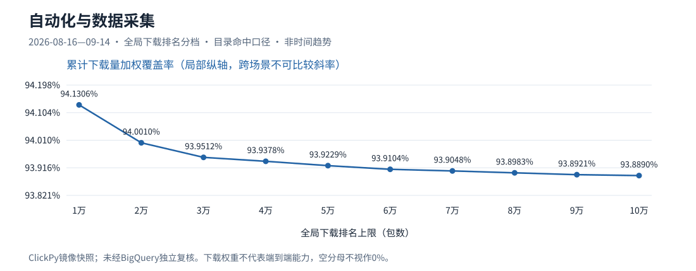
| 全局排名范围 | 场景命中/全部库 | 命中/全部下载计数 | 累计覆盖率 | 比上一档变化 | 新增区间本场景覆盖率 |
|---|---|---|---|---|---|
| Top1万 | 17 / 45 | 823,634,709 / 874,991,571 | 94.1306% | — | 94.1306% |
| Top2万 | 19 / 63 | 823,815,461 / 876,390,290 | 94.0010% | -0.1296 | 12.9227% |
| Top3万 | 21 / 87 | 823,873,337 / 876,916,362 | 93.9512% | -0.0498 | 11.0015% |
| Top4万 | 25 / 103 | 823,908,379 / 877,078,880 | 93.9378% | -0.0134 | 21.5619% |
| Top5万 | 30 / 131 | 823,938,788 / 877,249,989 | 93.9229% | -0.0149 | 17.7717% |
| Top6万 | 32 / 162 | 823,946,944 / 877,375,666 | 93.9104% | -0.0125 | 6.4897% |
| Top7万 | 33 / 181 | 823,950,121 / 877,430,994 | 93.9048% | -0.0056 | 5.7421% |
| Top8万 | 33 / 207 | 823,950,121 / 877,491,663 | 93.8983% | -0.0065 | 0.0000% |
| Top9万 | 36 / 241 | 823,956,116 / 877,556,804 | 93.8921% | -0.0063 | 9.2031% |
| Top10万 | 38 / 261 | 823,959,149 / 877,588,852 | 93.8890% | -0.0031 | 9.4639% |
累计 79.9762% → 78.8907%；净变化 -1.0855 个百分点；下降或持平。Top10万内：534 / 4,213 个库命中。
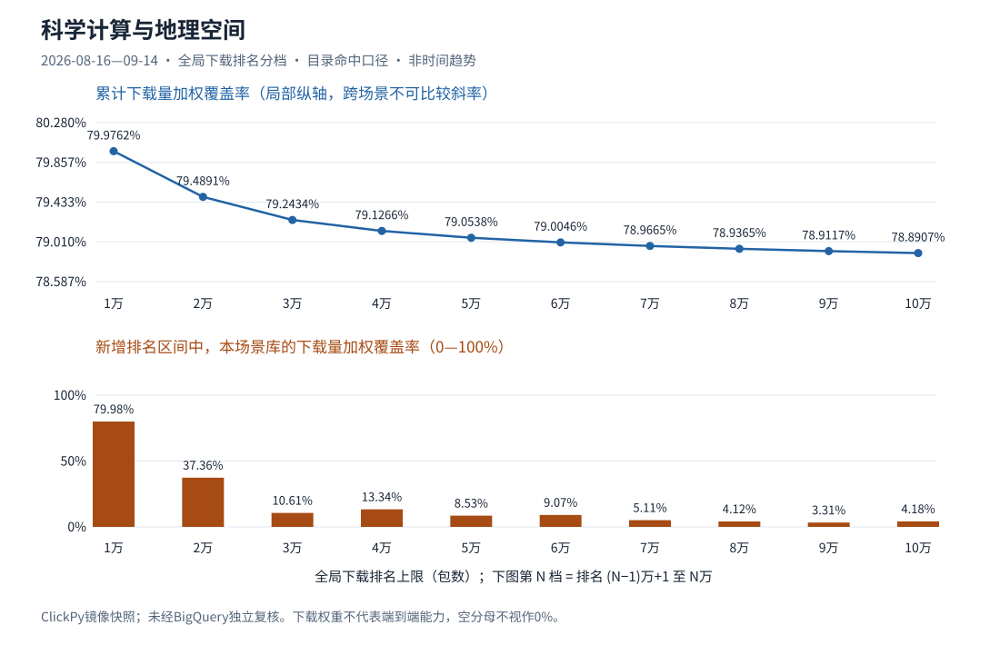
| 全局排名范围 | 场景命中/全部库 | 命中/全部下载计数 | 累计覆盖率 | 比上一档变化 | 新增区间本场景覆盖率 |
|---|---|---|---|---|---|
| Top1万 | 129 / 251 | 1,988,948,313 / 2,486,925,602 | 79.9762% | — | 79.9762% |
| Top2万 | 281 / 686 | 1,999,691,006 / 2,515,679,535 | 79.4891% | -0.4871 | 37.3608% |
| Top3万 | 325 / 1,123 | 2,000,646,358 / 2,524,685,565 | 79.2434% | -0.2457 | 10.6079% |
| Top4万 | 385 / 1,588 | 2,001,244,047 / 2,529,166,558 | 79.1266% | -0.1168 | 13.3383% |
| Top5万 | 423 / 2,031 | 2,001,466,868 / 2,531,777,632 | 79.0538% | -0.0728 | 8.5337% |
| Top6万 | 463 / 2,472 | 2,001,628,510 / 2,533,559,914 | 79.0046% | -0.0492 | 9.0694% |
| Top7万 | 485 / 2,905 | 2,001,695,290 / 2,534,867,658 | 78.9665% | -0.0381 | 5.1065% |
| Top8万 | 502 / 3,335 | 2,001,737,101 / 2,535,881,638 | 78.9365% | -0.0299 | 4.1235% |
| Top9万 | 516 / 3,771 | 2,001,764,725 / 2,536,716,286 | 78.9117% | -0.0249 | 3.3097% |
| Top10万 | 534 / 4,213 | 2,001,794,439 / 2,537,427,222 | 78.8907% | -0.0209 | 4.1796% |
累计 75.5482% → 75.0918%；净变化 -0.4564 个百分点；下降或持平。Top10万内：91 / 609 个库命中。
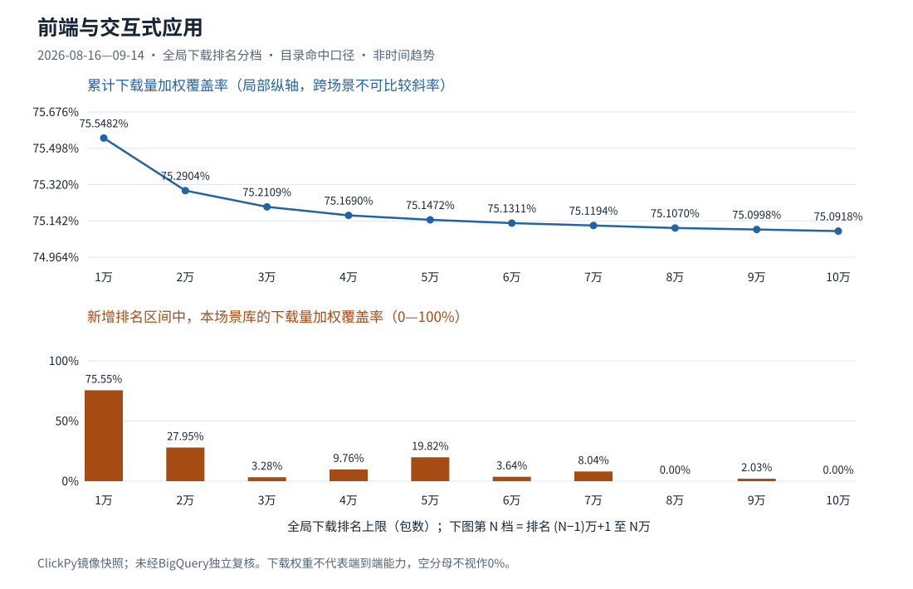
| 全局排名范围 | 场景命中/全部库 | 命中/全部下载计数 | 累计覆盖率 | 比上一档变化 | 新增区间本场景覆盖率 |
|---|---|---|---|---|---|
| Top1万 | 47 / 87 | 695,345,509 / 920,399,398 | 75.5482% | — | 75.5482% |
| Top2万 | 64 / 155 | 696,746,666 / 925,411,986 | 75.2904% | -0.2578 | 27.9528% |
| Top3万 | 66 / 207 | 696,780,288 / 926,435,838 | 75.2109% | -0.0796 | 3.2839% |
| Top4万 | 72 / 267 | 696,838,117 / 927,028,175 | 75.1690% | -0.0418 | 9.7629% |
| Top5万 | 84 / 329 | 696,910,641 / 927,394,088 | 75.1472% | -0.0218 | 19.8200% |
| Top6万 | 86 / 381 | 696,918,245 / 927,603,245 | 75.1311% | -0.0161 | 3.6355% |
| Top7万 | 90 / 435 | 696,931,269 / 927,765,304 | 75.1194% | -0.0117 | 8.0366% |
| Top8万 | 90 / 499 | 696,931,269 / 927,917,349 | 75.1070% | -0.0123 | 0.0000% |
| Top9万 | 91 / 547 | 696,933,134 / 928,009,057 | 75.0998% | -0.0072 | 2.0336% |
| Top10万 | 91 / 609 | 696,933,134 / 928,107,732 | 75.0918% | -0.0080 | 0.0000% |
累计 70.8273% → 70.3446%；净变化 -0.4827 个百分点；下降或持平。Top10万内：159 / 1,049 个库命中。
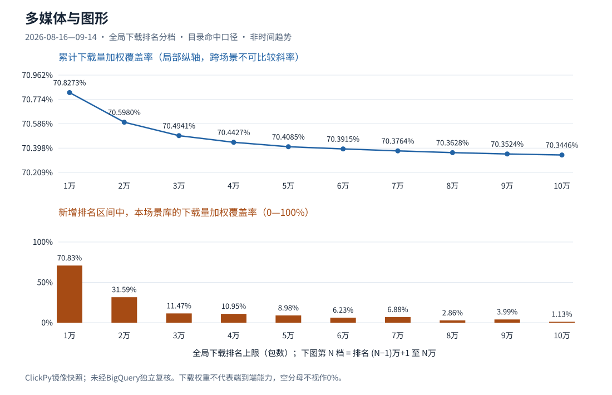
| 全局排名范围 | 场景命中/全部库 | 命中/全部下载计数 | 累计覆盖率 | 比上一档变化 | 新增区间本场景覆盖率 |
|---|---|---|---|---|---|
| Top1万 | 72 / 120 | 884,086,713 / 1,248,229,126 | 70.8273% | — | 70.8273% |
| Top2万 | 106 / 233 | 886,404,132 / 1,255,564,620 | 70.5980% | -0.2292 | 31.5919% |
| Top3万 | 117 / 340 | 886,657,880 / 1,257,776,447 | 70.4941% | -0.1040 | 11.4723% |
| Top4万 | 128 / 450 | 886,776,918 / 1,258,863,323 | 70.4427% | -0.0514 | 10.9523% |
| Top5万 | 139 / 568 | 886,839,869 / 1,259,564,275 | 70.4085% | -0.0342 | 8.9808% |
| Top6万 | 144 / 650 | 886,860,653 / 1,259,897,801 | 70.3915% | -0.0170 | 6.2316% |
| Top7万 | 151 / 750 | 886,881,297 / 1,260,197,889 | 70.3764% | -0.0151 | 6.8793% |
| Top8万 | 154 / 857 | 886,888,533 / 1,260,450,881 | 70.3628% | -0.0136 | 2.8602% |
| Top9万 | 158 / 960 | 886,896,386 / 1,260,647,827 | 70.3524% | -0.0104 | 3.9874% |
| Top10万 | 159 / 1,049 | 886,898,001 / 1,260,791,246 | 70.3446% | -0.0079 | 1.1261% |